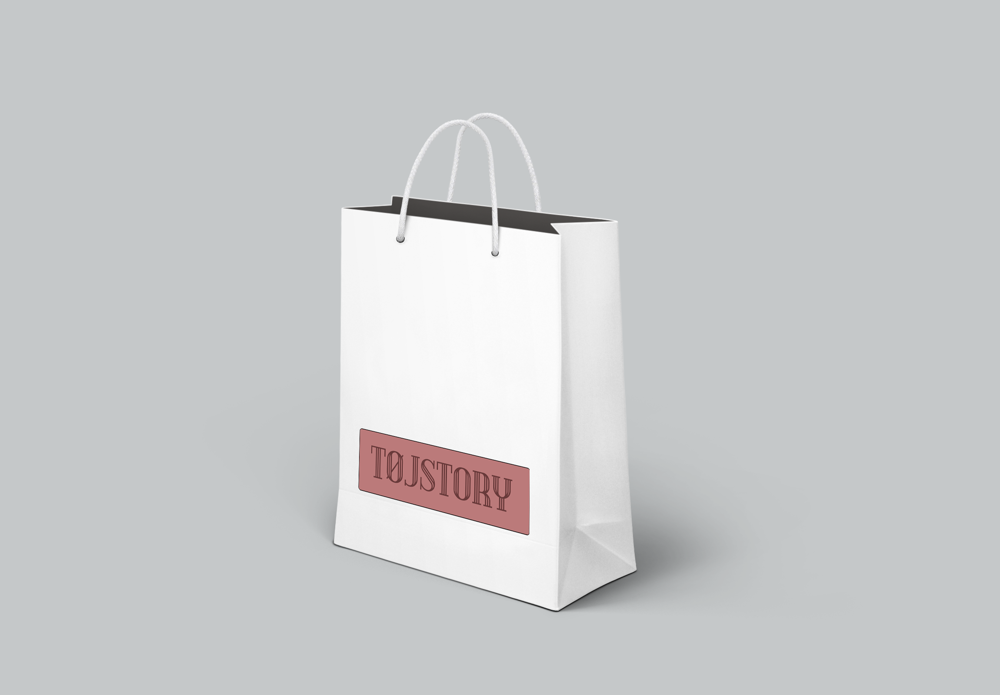
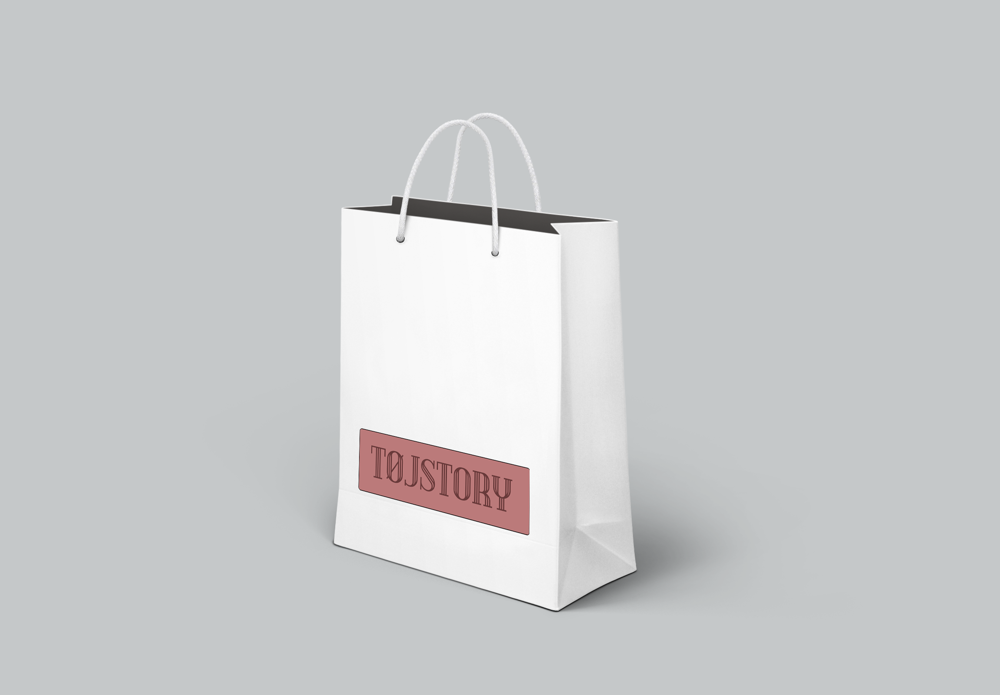
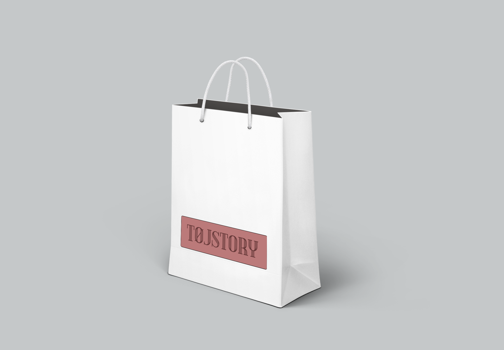

Design
Det mest spændende for mig var ved dette projekt den logo proces, vi havde. Vi startede ud med at lave hver for sig, fik bedømt dem af Heidi og arbejdede så sammen videre med ét. Det endelige logo lagde stilen for resten af sidens design, hvilket gjorde, vi fik en fin rød tråd. Det var spændende at koble kommunikation, virksomhed og design sammen, da vi forsøgte at skabe en visuel identitet ud fra, hvad vi havde lært om virksomheden.
Da vi havde besluttet for ét logo, vi gerne ville arbejde videre med, diskuterede vi om logoet mest skulle være moderne, for at understøtte at butikken er ny og med på moden, eller old-school, for at understøtte vintage delen i butikken. Vi endte med at få begge dele med i logoet på grund af vores farvevalg og vigtigst af alt fonten. Vi var ude at lege i en font som skulle ligne et neon skilt og endte egentlig med lidt at holde fat i det, da fonten vi valgte, er dobbelt ligesom ved neon-fonts.
Moderne logo'er
Da vi havde valgt en farvepalette som både var moderne, men også understøttede vintage-delen, legede jeg lidt med forskellen på de varme og kolde farver og med kontrasten imellem farven på baggrunden og farven på teksten. Det var en længere proces, var jeg var nødt til at få øjnene fra det og tilbage igen, for at kunne finde ud af, hvad der så mest rigtig ud. Vi valgte mere støvet og kold farve til vores logo, da det bedst repræsenterede vintage og old-school sammen med den moderne font.
Inden vi nåede til vejs ende, havde vi haft en spændende logo proces, som vi alle nød og vi have haft mange overvejelser i gang selv omkring de mindste detaljer. Det var et fedt stykke arbejde at lave både alene og i gruppe, da vi alle var mere eller mindre lige passioneret omkring det.
Det endelige logo
Vi valgte til det endelige logo en mere støvet og kold farve da det bedst repræsenterede butikken sammen med den moderne font. Ydermere fik den en kant som havde runde hjørner. Kanten skaber en illusion om at logo’et er et skilt og de afrundede hjørner giver et mere blidt udtryk.
Vi afprøvede vores logo i diverse mock-ups hentet fra nettet, for at se hvordan det ville fungere i virkeligheden. Logo’et fungerede i forskellige størrelser og vi blev derfor endnu mere sikre på, vi var kommet frem til noget rigtig godt.

IT Jeg arbejdede ikke med kodningen af de mest elementære ting, da vi delte arbejdsopgaverne ud for at kunne nå det.
Til gengæld var jeg med, da vi arbejdede med det responsive, da det var det som var nyt og en stor del af opgavebeskrivelsen. Jeg fik forståelse for hvordan media queries skal benyttes, hvilke ”regler” der er for dem og hvilke fordele, der er ved at benytte det.